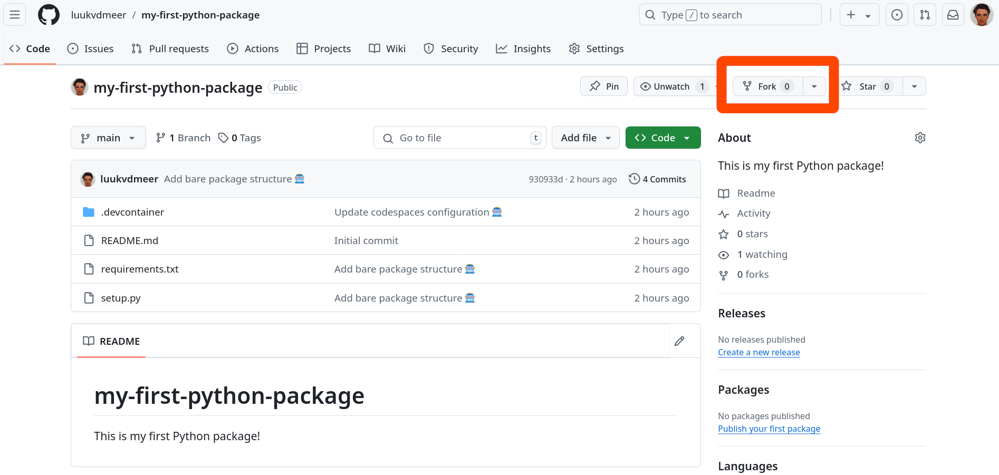
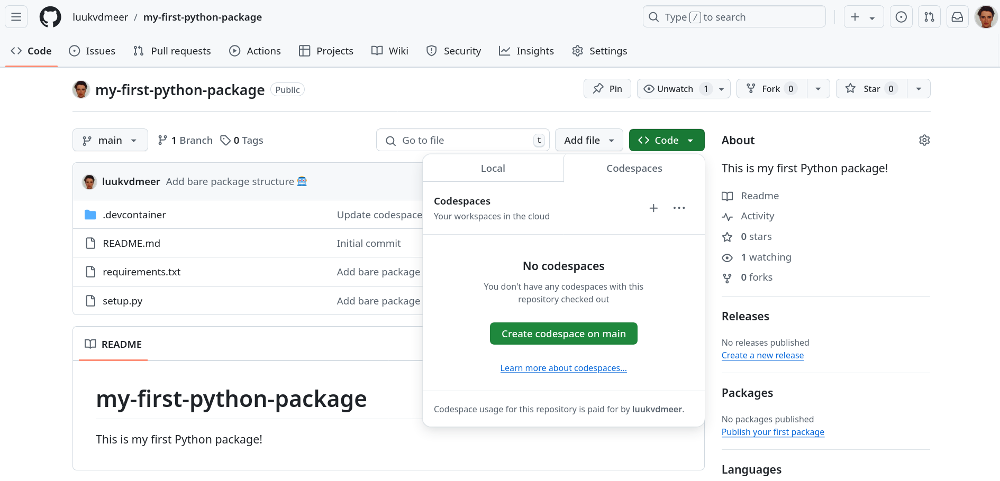

Create your first Python package
This workshop lets you create your first Python package, following the steps below!
Prepare
To do this workshop you need to have a recent Python version installed. Additionally, you will need to install some Python packages that extend the basic functionalities of the Python language, using the package manager pip (or any other package manager of your choice). Finally, you will need Git for version control and to release your package on GitHub.
There are two ways in which you can create the required environment.
Install everything yourself
Use GitHub Codespaces
If you did not manage to prepare your environment in advance or you find it too complicated, we recommend to use GitHub Codespaces.
1. Working locally
Install Python, pip and Git
Guidelines to install Python and Git are listed below:
Install Python packages
Once you have those installed, run the following lines in your terminal of choice to install the setuptools and sphinx packages:
python -m pip install setuptools
python -m pip install sphinxMake sure you have a GitHub account
To pull from and push to GitHub you will need a GitHub account. You can sign-up here.
Create a GitHub repository
On you GitHub account, you will host your Python package. You can either create a new one and start from scratch, or fork the workshop repository. Then, clone this repository on your local machine using git clone.
2. Using GitHub Codespaces
Make sure you have a GitHub account
To use Codespaces you will need a GitHub account. You can sign-up here.
Create your codespace
Go to the workshop GitHub repository. First, you “fork” this repository on your own account. This basically makes a copy of it for you to edit. Do this by clicking the “Fork” button.

In your forked repository, click on the green button called “Code”, go to the “Codespaces” tab and click on “Create codespace on main”.
 A new tab will open where your Codespace will start setting-up. The process may take a few minutes. Once, done you will see a Visual Studio Code environment. This is where you will be doing your work in!
Codespace management
Your Codespace should be available to you every time you go to the workshop repository. GitHub will auto-delete your Codespace after a certain amount of time if you have not used it. This is meant to free up your Codespace storage. If you have set-up the Codespace some days before the workshop, it should stay there but if you want to control when the Codespace is deleted, you can do so with the dropdown (...) next to your codespace and de-selecting the “Auto-delete codespace” option.
Create
Create your first Python package using the steps below.
After each step, we will commit the changes we made to git. In that way, we constantly keep track of our development and can reverse changes whenever needed. Committing can be done in the Terminal tab. We first add all changes to be committed using git add ., and then commit them using git commit.
If you use codespaces it may complain the repository has “dubious ownership”. Although you may indeed be a very dubious person, run git config --global --add safe.directory /workspaces/my-first-python-package to act like you are not, such that you can proceed.
git add .
git commit -m 'Type here a short description of the commit'1. Setup the package structure
The workshop GitHub repository will have the bare package structure already setup for you. This contains two files:
setup.py: This file contains important metadata that defines your package. We will need to fill some of its fields afterwards.requirements.txt: This file lists other Python packages your package depends on. You could also list them directly in yoursetup.pyfile, but the common way of doing it in Python is to have a separate file for it, thatsetup.pyreads. For now, the file will be empty, since we do not have any dependencies (yet)..gitignore: This file lists common files that are in a Python package repository but should be ignored by the version control of git, and not be pushed to GitHub.
There are three things we need to do at this point to finalize our setup:
- To finalize our setup, we need to fill some fields in the
setup.pyfile. In thenamefield, give your package a name that is different frommy-first-python-package. I suggest that for this toy package you use your first name followed by “py”, in my caseluukpy. In thedescriptionfield, write a one line description of your package. In theauthorfield, declare yourself the author of the package, and in theauthor_emailfield, add your email (you can omit this also). Leave thelicensefield untouched for now, we will talk about licenses later. - Create a folder in which your actual Python code will live. Give this folder the same name as your package name.
- Inside this folder, save an empty Python script that you name
__init__.py. This file is required for each Python package, and is executed whenever someone imports your package. For now, it can be empty.
Don’t forget to commit your changes to git!
2. Write a function
Time to write a function. Open a new, blank Python script. Your first function could print a message saying hello to your user. But you can choose something different as well, be creative!
def hello(name = "world"):
print("Hello ", name, "! Welcome to my first Python package!", sep = "")
}Save this file as hello.py inside the package folder you created in the previous step. Such a file inside our package that contains one or more functions, we use to call a “module” in Python.
Now, in your __init__.py file, add the following line:
from hello import helloThis will make sure that anyone using your package can directly call the hello() function, without having to specify in which module (in our case, hello.py) it is located. Hence, they can run:
from yourpackage import helloInstead of:
from yourpackage.hello import helloDon’t forget to commit your changes to git!
3. Document your function
In a good package, functions are documented. It is described what the function does, what (type of) values it accepts as arguments, and what (type of) value it returns. Also, it should give an example of the function usage. In Python, they usually call this “docstrings”, and you add them right below your function header. However, there is not one standard way of formatting them. Popular styles are the Google-style docstrings, and the Numpy-style docstrings. In the scientific world, the latter is the most used.
You can add them to your function as follows.
def hello(name = "world"):
"""Write here a title of your function
Write here a short description of your function.
Parameters
----------
name : str
Describe here what the name parameter does.
Returns
-------
str
Describe here what the function returns.
Examples
--------
>>> Give here an example of how to use the function.
"""
print("Hello ", name, "! Welcome to my first Python package!", sep = "")
}str is one of the possible types of an object (it stands for “string”, i.e. a sequence of characters). Other common types are int for integer numbers, and float for floating-point numbers.
Now, users can check your function documentation using help():
help(hello)Don’t forget to commit your changes to git!
4. Add a license
Now your package contains actual code, it is time to think about the license under which you want to release your package. Every released open-source project should have a license!. Without a license, the default copyright laws apply, meaning that you retain all rights to your source code and no one may reproduce, distribute, or create derivative works from your work. Also, a license specifies that the software is released without any kind of warranty. Your are basically telling people: “Do with it what you want, but don’t sue me if anything goes wrong!”. Many licenses will also require people to attribute you once they copy parts of your code.
There are different types of open-source licenses. I usually prefer a permissive license, without too many restrictions. Popular licenses in this category include the MIT license and the Apache 2.0 license. On this page you find an overview of most licenses, and when you click on them, it also tells you how to apply this license to your work. In most cases, this simply comes down to including a file LICENSE.md or LICENSE.txt in the root of your directory, containing the license text.
For example, when you use the Apache 2.0 license, copy the full license text into a file and store it as LICENSE.md or LICENSE.txt in your repository. Also, add the name of the license (“Apache License 2.0”) to the setup.py file of your package.
I usually also state the license in the README.md file, specifying the copyright holder. You can add the following to your README.md file to do so.
## License
Copyright 2024 [your name]
Licensed under the Apache License, Version 2.0 (the "License");
you may not use this file except in compliance with the License.
You may obtain a copy of the License at
http://www.apache.org/licenses/LICENSE-2.0
Unless required by applicable law or agreed to in writing, software
distributed under the License is distributed on an "AS IS" BASIS,
WITHOUT WARRANTIES OR CONDITIONS OF ANY KIND, either express or implied.
See the License for the specific language governing permissions and
limitations under the License.Don’t forget to commit your changes to git!
5. Install your package
Now you can install your own package with pip, and use it locally as with any other package! By adding the -e flag, you install in “editable mode”, meaning that if you make changes to your code, you do not have to re-install to use your updated functions.
pip install -e .6. Release your package
The time is there: release your package on GitHub. If you have committed all changes at every step already, the only thing left to do it run the following line in the Terminal:
git push origin mainThis will push all committed work to the main branch of your GitHub repository. Now other people can install your package from there using pip. Done!
7. Additional tasks
Too easy for you? Here are some additional tasks to make your package better.
7.1 Add dependencies
The first hello() function was so simple that we did not need to depend on any other Python package. But now, you want to spice up your package and include emoticons in your greeting. This can be done using the emoji package.
In the requirements.txt file, you need to specify that your package depends on the emoji package by adding an line as follows. This will also install the dependency when installing your package.
- emojiNow, in our hello.py module we can import the emoji package, and use its functions.
from emoji import emojize
def hello(name = "world"):
print(
"Hello ",
name,
"! Welcome to my first Python package!",
emojize(":wave:"),
sep = ""
)7.2 Write unit tests
It is good practice to write formal tests for your code, to make sure it behaves as expected in every possible situation. The best way to find bugs it too write many small tests, which each test a small unit of your code. This is called unit testing. The Python package unittest makes it much easier to do this.
Set up the test structure by adding a new folder to your root directory, which you name tests. Inside that folder, create again an empty __init__.py file. Then, create another script to test your function, which you could name test_hello.py.
In that script, import your own package and unittest, and write a simple test for the hello() function, using the functions supplied by unittest. An example could be that you test if the output of the hello() function is indeed a string. Each test is always written as a method of a test class, as shown below.
import yourpackage
import unittest
class TestHello(unittest.TestCase):
def test_hello(self):
self.assertIsInstance(yourpackage.hello(), str)One way to run all your tests, is by running the following in your command line (given that you are in the directory of your package):
python -m unittest discoverSee here for more information on testing for Python packages.
7.3 Use GitHub Actions
Before pushing to GitHub, you should always run the package tests. Instead of doing this yourself (and remembering to do it..), you can also automate this process using GitHub Actions. By adding a specific GitHub Actions workflow to your repository, this will trigger the tests whenever you push your work to GitHub.
To enable this, create a new folder named .github. Inside it, create again a new folder named workflows. Inside that folder, create a file which you can name unittest.yml. The following content should be enough for the most simple test workflow:
name: Tests
on: push
jobs:
build:
runs-on: ubuntu-latest
steps:
- name: checkout
uses: actions/checkout@v2
- name: install-package
shell: bash -l {0}
run: |
pip install -e .
- name: test
shell: bash -l {0}
run: |
python -m unittest discover7.4 Write user guides
Function documentation is very brief and formal. To explain more details of the package, or to present actual use-cases, you often want to write more readable, extensive documentation in the form of user guides. Where in R, there is a standardized way of doing this through package “vignettes”, in Pyhton, there is less clarity.
What I normally do is to create a folder that I name demo, and fill it with Jupyter Notebooks that showcase the package usage by combining text with Python code. Find here and introduction to Jupyter notebooks, if you are not yet familiar with them.
7.5 Create a package website
In the meantime you created a lot of package documentation and metadata. For users, it is great if they can easily read all of this on a dedicated package website. This sounds like a lot of work, and unfortunately, in Python this is indeed quite a hassle. The Sphinx project has made it at least a bit easier to get started.
First, in the root directory create a file that you name README.rst. The .rst extension stands for re-structured text. This is similar to Markdown, but a bit different. You could add the following content as a start:
My first Python package
========================
This is my first Python package!Then from the command line, run the following command. This will make you answer some questions (usually, answer yes), and set up the basic structure for the website in a directory named docs.
sphinx-quickstart docsBuild and preview your website locally as follows. Afterwards, you can open it in your browser through the file docs/build/html/index.html.
sphinx-build -M html docs/source/ docs/build/Of course, this is a very simple version of it, there are many ways to customize it later. There are also ways to convert your README.md to rst format, and to add Jupyter notebooks as user guides to the website. However, customization can be quite cumbersome. It will require you to install a lot of Sphinx extensions and play around with them. If you want, you can look at my semantique package for some inspiration.
Install other’s packages
You wrote and released your package. Other people in the workshop did that too. Now it is time to install the packages of the others, and see what they have to offer.
Install as follows through the terminal:
python -m pip install git+https://github.com/theirusername/my-first-python-package.gitThen open a Python shell in the terminal:
python3Inside it, import the package, check the function documentations, and call the function! Potentially with some arguments.
import theirpackagename
help(theirpackagename)
theirpackagename.theirfunction()